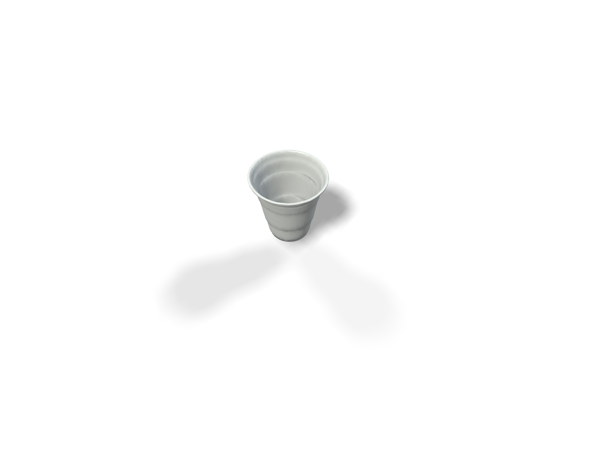

1.specify
waypoints +
interactions
preparing the policy collection…
space: play/pause · arrow keys: next/previous beat · drag the timeline to inspect transitions
Selected saved policy rollouts; 150 setups include geometry and program variants. Each task has its own monolithic policy for the full sequence. Hardware footage demonstrates grasping transfer. Expanded RGBA rendering changes presentation only, preserving trajectories, object geometry and nominal scale. LINK shows the actual intermediate reference. Source dataset and saved-episode provenance remain in the collection records.